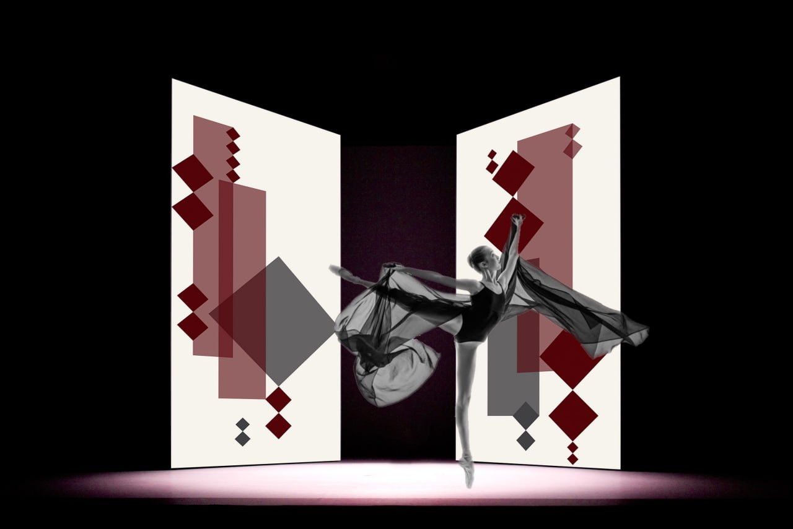

Performance Premiere
The Visible Breath
of Frequency

Photo: Darragh Hehir
The Visible Breath of Frequency is an immersive performance-installation that extends the Sounding Canvas series into choreographic territory. Transforming the original wall-mounted format into suspended sensory curtains and an interactive floor, the work invites the dancer into a continuous, live dialogue with the artwork. The piece explores the evolving relationship between movement, sound, and visual abstraction.
The dancer enters a stage framed by interactive textile panels and a sensor-embedded floor, where touch-sensitive zones generate sound in real time. Each gesture, whether a gentle graze or a grounded step, activates a sonic response. The dancer does not perform to pre-composed music. Instead, she composes it through movement. Her actions shape an evolving sonic environment, which in turn provokes new movement.
The Feedback Architecture
This reciprocal exchange challenges traditional hierarchies between performer and scenography. The installation is not a backdrop, but a co-performer. It is an active, responsive system that listens, answers, and evolves over time. While unpredictability is central, the sonic behavior is guided by a carefully designed palette, ensuring coherence while leaving space for surprise.
The visual language draws on Dora Motèque’s ongoing research in Persian calligraphy, abstraction, and sensory perception. Minimal in palette and form, the painted surfaces function as spatial scores. They guide movement, mark rhythm, and invite interaction.
Artistic Goals
-
/01
To blur the boundaries between stage, performer, and sound.
-
/02
To position the dancer as a co-creator of the sonic environment.
-
/03
To expand the role of scenography as an interactive, responsive system.
-
/04
To invite audiences into a multisensory experience where sound becomes echo and anticipation.
Collaborators
Dora Motèque
Artist, Concept, Scenography
Anna Manes
Choreographer and Performer
Luciano Ciamarone
Composer and Technical Developer